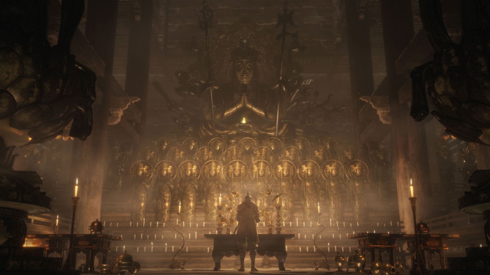

---
# Feel free to add content and custom Front Matter to this file.
# To modify the layout, see https://jekyllrb.com/docs/themes/#overriding-theme-defaults

layout: home
title: Home
banner: "assets/images/banners/banner_1.jpg"
---

<style>
  .banner-container {
    position: relative;
    width: 100%;
    max-height: 400px;
    overflow: hidden;
  }
  .banner-carousel {
    display: flex;
    transition: transform 0.5s ease-in-out;
    width: 1200%; /* 12 images * 100% */
  }
  .banner-carousel img {
    width: 100%;
    flex-shrink: 0;
  }
  .scroll-button {
    position: absolute;
    top: 50%;
    transform: translateY(-50%);
    background-color: rgba(0, 0, 0, 0.5);
    color: white;
    border: none;
    padding: 10px;
    cursor: pointer;
    z-index: 1000;
  }
  .left { left: 10px; }
  .right { right: 10px; }
</style>

<div class="banner-container">
  <div class="banner-carousel">
    
    
    
    
    
    
    
    
    
    
    
    
  </div>
  <button class="scroll-button left" onclick="prevBanner()">&#10094;</button>
  <button class="scroll-button right" onclick="nextBanner()">&#10095;</button>
</div>

<script>
  const bannerCarousel = document.querySelector('.banner-carousel');
  const bannerImages = document.querySelectorAll('.banner-carousel img');
  let currentBannerIndex = 0;
  const totalBanners = bannerImages.length;

  function updateBanner() {
    bannerCarousel.style.transform = `translateX(${-currentBannerIndex * 100}%)`;
  }

  function prevBanner() {
    currentBannerIndex = (currentBannerIndex - 1 + totalBanners) % totalBanners;
    updateBanner();
  }

  function nextBanner() {
    currentBannerIndex = (currentBannerIndex + 1) % totalBanners;
    updateBanner();
  }

  setInterval(nextBanner, 3000); // Auto transition every 3 seconds
</script>
